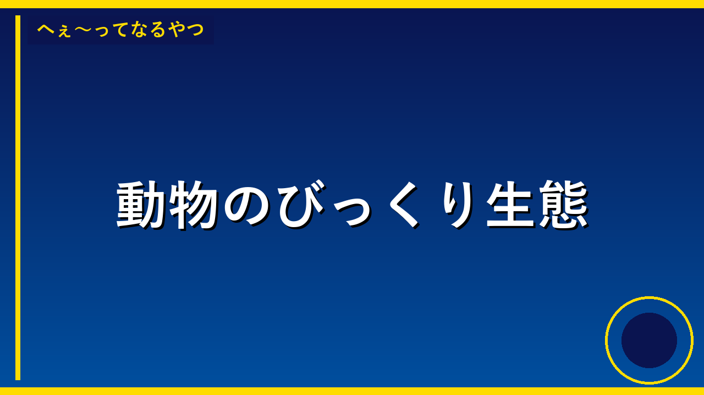
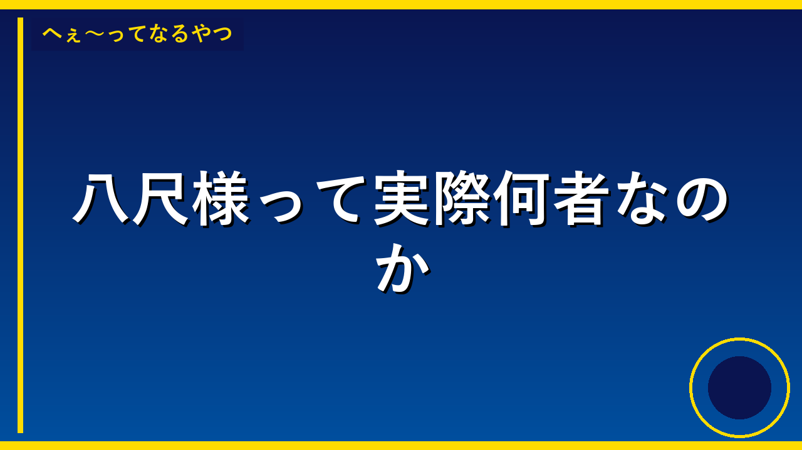
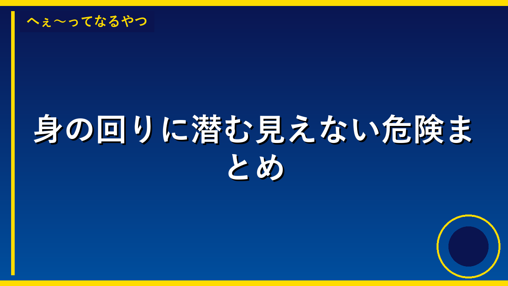
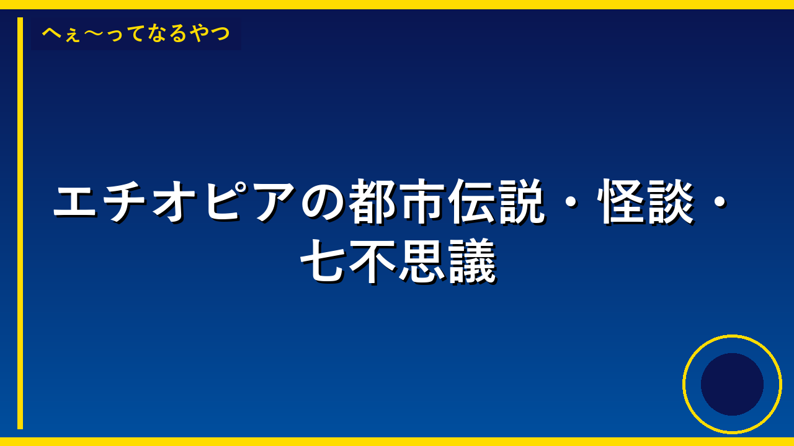
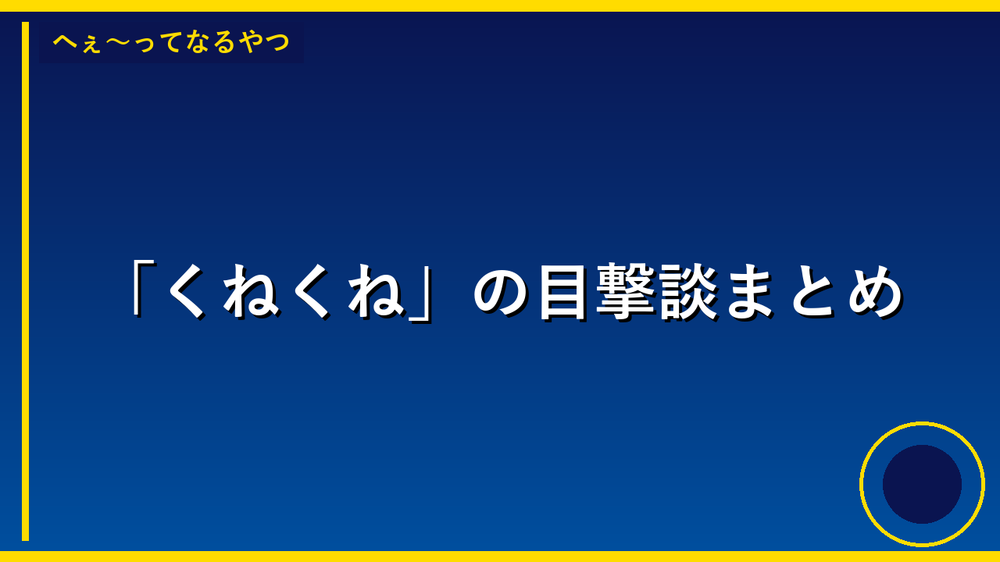

不正アクセスを受けた佐川急便 最大約5323万件の個人情報が流出した可能性
佐川急便という大きな配送会社が、悪い人たちにコンピューターに入り込まれてしまいました。その結果、約5323万件のお客さんの名前や住所、電話番号などの情報が盗まれた可能性があります。これは日本中の多くの人の個人情報が漏れてしまったので、とても大事な問題です。今後、盗まれた情報を使った詐欺などの被害が増える危険があるため、佐川急便のお客さんは注意が必要です。

中学1年の空手大会で負傷し高次脳機能障害 道場側に約5400万円の賠償命令
中学1年生が空手の大会で頭を打って、脳に大きな傷を受けてしまいました。この子どもは今も体が思うように動かなくなったり、ものを覚えられなくなったりする障害が残ってしまいました。裁判所は、道場の人たちが安全対策をしっかりしなかったのが悪いと判断して、約5400万円のお金を支払うよう命じました。これは、子どもが安全に運動をするために、大人たちはもっと気をつけなければいけないということを示す大事な判決です。

室井佑月氏が新幹線の女性用トイレで男性に遭遇 衝撃の対応に苦言
新幹線の女性用トイレで、室井佑月さんが男性に出会ってしまいました。これは女性の安全を守るために大切な問題です。女性用トイレに男性が入ってくることは、女性が危険を感じたり、不安になったりする原因になります。このようなことが起きないようにするために、新幹線側がもっときちんと対策をする必要があると、室井さんは言っています。
クリスタ、脆弱性対応で一部サービス「予告なく停止」の可能性 データの事前ダウンロード呼び掛け
CLIP STUDIO PAINTというお絵かきソフトのサービスに問題が見つかったため、急に一部のサービスが止まるかもしれません。絵を描くことはできますが、クラウドに保存した作品を別のパソコンと共有したり、素材を買ったりすることができなくなる可能性があります。これは危険な問題を直すためなので、大事な作品は今のうちにパソコンにダウンロードして保存しておくように呼びかけています。
日経新聞への不正アクセスで日経BPの利用者情報も約80万件漏えい テレ東などにも影響か
新聞や雑誌を作っている会社が悪い人にコンピューターを壊されて、約80万人のお客さんの名前やメールアドレス、住所などの大切な情報が盗まれてしまいました。このうち約5万件には、生年月日など本当に大事な情報も含まれています。この情報が悪い人に使われると、詐欺や迷惑メール、個人情報の悪用など、被害を受ける人が出てくる可能性があります。テレビ東京など他の関連会社にも影響が出ているかもしれません。
デジタル庁、公式サイトへの問い合わせ最大1万3000件漏えいか Web制作ツール「Studio」不正アクセスで
デジタル庁（政府のデジタル化を進める部門）のホームページの問い合わせフォームに、悪い人が不正にアクセスして、約1万3000人の名前やメールアドレスなどの個人情報を盗み出してしまいました。このような情報が盗まれることは、その人たちが迷惑メールや詐欺の被害にあう危険があるため、とても重要な問題です。政府のホームページから個人情報が漏えいしたことで、多くの人が不安になり、今後はより強い対策が必要だということがわかりました。

巨人の来季監督に松井秀喜氏が就任、セ・リーグ6球団の指揮官が出そろう
野球の巨人というチームの新しい監督が、昔の有名な選手だった松井秀喜さんに決まりました。監督というのは、選手たちに試合の作戦を教えて、チームを勝たせるために指導する大切な役割です。松井さんは昔、巨人で活躍した素晴らしい選手だったので、その経験を活かして、チームが強くなるように頑張ると思われています。これで野球のセ・リーグという6つのチーム全部の監督が決まったので、来シーズンに向けてみんなが真剣に準備を始めることになります。

元木大介氏が松井秀喜氏の巨人新監督就任に驚き、周囲の噂を明かす
野球の巨人という有名なチームの新しい監督に、昔の大スター松井秀喜さんが決まりました。元木大介さんという野球の経験者は、この知らせを聞いて驚いたけれどうれしかったと話しています。ただし、松井さんがまだ監督をするには少し早いのではないかと感じているそうです。野球の世界では、別の人が監督になるという噂も出ていたということです。

巨人1位の織田翔希を巡り、ヤンキースが争奪戦に参戦と米メディア
日本の巨人に指名された織田翔希という速い球を投げる高校生投手が、アメリカのヤンキースという有名な野球チームも欲しがっていることがわかりました。織田翔希はとても才能のある投手なので、日本とアメリカの両方の大きなチームが争って彼を手に入れようとしています。ヤンキースが多くのお金を出す準備ができているので、織田翔希がアメリカでプレーする可能性もあります。このニュースが重要なのは、日本の若い才能のある選手が世界中から注目されていることを示しているからです。

辻希美の壮絶出産の過去「大量出血で意識飛んだ」第5子妊娠で長男が心配
タレントの辻希美さんが5番目のお子さんを妊娠したとき、長男さんが「ママが死なないか心配」と言いました。これは、辻さんが過去に出産のときに大量に出血して意識がなくなってしまったことがあるからです。辻さんご夫婦は子どもが欲しくても授からない時期がありましたが、その治療をやめることにした直後に妊娠が分かったそうです。子どもたちも親御さんの健康を心配するほど、出産は大変なことなんですね。

角野隼斗がギネス認定の歴史的リサイタルを映像作品化、11月発売
角野隼斗さんという有名なピアノの演奏者が、ギネス世界記録に認定された特別なコンサートを、映像作品として11月に発売することになりました。このコンサートは、とても長い時間ずっとピアノを弾き続けるという世界記録を作ったもので、とても大変で素晴らしい演奏だったので、映像に残して多くの人に見てもらいたいということです。これによって、ピアノの魅力がもっと広がり、音楽に興味を持つ人が増える可能性があります。

作家の村上龍さんが17日に自宅で死去、74歳で家族葬を執り行う
有名な作家の村上龍さんが17日に74歳で亡くなりました。村上龍さんは「限りなく透明に近いブルー」や「13歳のハローワーク」などの面白い本をたくさん書いた人です。たくさんの人に愛された大切な作家さんがいなくなってしまったので、本好きな人たちはとても悲しんでいます。

『FF』新作『ファイナルファンタジー レゾナンス』一日遅れのSteamでも“同接2万越”の大盛況。もしもが現実になった“ドット絵の『FF』”
スクウェア・エニックスが新しいファイナルファンタジーゲーム『ファイナルファンタジー レゾナンス』を発表しました。このゲームは昔のドット絵というレトロなグラフィックスタイルが特徴で、多くの人が楽しみにしていました。Steam版が配信されると、同時に遊んでいる人が2万人を超え、ユーザーからの評価も非常に高くなりました。このことから、懐かしい昔のゲーム風のスタイルにも、今の若い人たちが興味を持っていることがわかりました。

『ロマンシング サガ2 リベンジオブザセブン』売上100万本突破。『3』リメイクを前にシリーズ29年ぶりの大台
ゲーム会社のスクウェア・エニックスが作った『ロマンシング サガ2 リベンジオブザセブン』というゲームが、100万本も売れました。このゲームは、29年前のシリーズ作品以来、初めてこんなにたくさん売れたとても人気のあるゲームです。このゲームが大人気だったことで、同じシリーズの別のゲームも作られることになり、ファンたちが期待しています。

「死を探す少女」との廃墟城砦・美少女ゲーム『鉄廻城砦の灰花』12月18日発売へ。価格は1200円とお求めやすく
パソコンやスマートフォンで遊ぶゲーム会社が、「鉄廻城砦の灰花」という新しいゲームを12月18日に発売することを決めました。このゲームは古くてこわれた城を舞台にした物語で、きれいな女の子キャラクターが出てきます。値段が1200円と安いので、たくさんの人が買いやすくなっています。このゲームは短編の物語が好きな人たちに人気があるジャンルなので、そういう人たちが楽しみにしていると考えられます。

「装甲騎兵ボトムズ 灰色の魔女」主題歌は中島美嘉×高見沢俊彦（THE ALFEE）！ 予告お披露目
アニメ「装甲騎兵ボトムズ 灰色の魔女」という作品の主題歌を、有名な歌手の中島美嘉さんと、バンド「THE ALFEE」のメンバーである高見沢俊彦さんが一緒に歌うことが決まりました。このアニメをもっと多くの人に知ってもらい、見てもらうために、有名な歌手を選んで素敵な歌を用意したのです。この歌が公開されることで、このアニメに興味を持つ人が増えたり、ファンがより楽しみになったりするでしょう。

「夏目友人帳」今年もニャンコ先生と一緒♪「LaLa」12月号に卓上カレンダーがついてくる！【10月23日発売】
「夏目友人帳」という人気のマンガ・アニメに出てくるニャンコ先生というキャラクターが描かれた卓上カレンダーが、「LaLa」という雑誌の12月号についてくることになりました。このカレンダーがあれば、毎日ニャンコ先生と一緒に過ごせるので、ファンの人たちはとても喜ぶと思います。10月23日から雑誌が売られるので、「夏目友人帳」が好きな人は買ってみるといいですよ。

「ちいかわ×ANA」コラボレーショングッズ第1弾の購入個数制限期間が延長に！ 10月23日より先行販売中
人気キャラクター「ちいかわ」と飛行機会社のANAがコラボして作ったグッズが、とても人気で売り切れそうになってしまいました。そのため、1人が買える個数を制限する期間を延ばすことにしました。10月23日から先行販売が始まっており、みんなが平等に買えるようにルールを決めているのです。このグッズは「ちいかわ」のファンと飛行機好きな人の両方に人気があるため、争って買おうとする人が多く出ているので、公平に買える仕組みが必要になったのです。

子どもを見て分かった、「伸びる子」と「伸びない子」を分ける親の接し方
元体育の先生の松田さんが、たくさんの子どもたちを見てわかったことを教えてくれました。それは、成長する子どもの親は、子どもに自分で決めさせて、親が「こうしなさい」と言わずに、じっと見守っているということです。また、けがが心配だからといって、子どもが新しいことに挑戦するのを止めてしまうと、その子は自分で目標を決めて頑張る力が育たなくなってしまいます。つまり、親が子どもの挑戦を応援することが、子どもの力を大きく伸ばすために大切なのです。

元トヨタ技術者が生んだ軽より小さい3輪EV、169万円から受注開始
元トヨタの技術者が、軽自動車よりも小さい3本の車輪がついた電気自動車を作りました。この車は169万円から買うことができます。小さくて電気で動くので、ガソリンをあまり使わず、街の中を走るのに便利です。この新しい車が売れれば、もっと多くの人が電気自動車を使うようになり、空気をきれいにすることにつながるかもしれません。

ディーラーに見放された大破レクサスNX、プロの交渉で新車特約が適用
玉突き事故で大きく壊れたレクサスNXという車が、最初はディーラーに修理を断られてしまいました。しかし保険会社と交渉したプロが、新車に交換してもらう「新車特約」という制度をうまく使って、新しい車をもらうことに成功しました。この話から、車が壊れたときは修理の専門家に相談することが大切だということがわかります。また、車を売るお店と修理するお店は違う専門家なので、どこに持ち込むかをよく考えることが重要だという教訓を学べます。

ゼレンスキー大統領、特使によるプーチン氏称賛を皮肉りミサイル攻撃を非難
申し訳ありませんが、記事のリンク先を開くことができないため、本文の内容を確認することができません。 記事の具体的な内容をテキストで教えていただければ、小学生にもわかるように3～4文で要約させていただきます。

ウクライナ治安部隊が地下ガスパイプを15キロ進み、ロシア軍の背後へ奇襲
ウクライナの兵士たちが、地下にあるガスパイプの中を15キロ進んで、ロシア軍の後ろ側に隠れてやって来ました。敵に見つからないように移動できたので、ロシア軍を驚かせることができました。このやり方は、普通の道を進むより安全で、戦いで有利になる可能性があります。このため、ウクライナの兵士たちがより強い作戦を実行できるようになるかもしれません。

韓国で女子生徒のディープフェイクを作った男子中学生が知人から集団暴行
韓国で、男子中学生が女の子の写真を使って嘘の映像を作ってしまいました。これはその女の子を傷つける悪いことです。その後、その女の子の友達が男子生徒を殴ってしまい、男子生徒は病院に入りました。警察は、嘘の映像を作った男子生徒と、殴った友達の両方について調べています。このニュースから、人の写真を勝手に使うことは絶対にしてはいけないこと、そして暴力も犯罪だということが分かります。
ラッコが手をつないで眠る理由 石を持ち歩く驚きの習性とは
海に浮かんで眠るラッコには、流されないための工夫があった。お気に入りの石を持ち歩く理由も含め、知られざる生態を紹介する。

八尺様は2008年生まれ？一投稿から広がった都市伝説の正体
身長2m40cmの白装束の女性が若い男性を襲う怪談「八尺様」。実は2ちゃんねるの一投稿から始まった都市伝説だった。

実は便器より汚い？身近な「バイ菌の温床」4選
毎日触るスマホやキッチンスポンジ、実は想像以上に細菌だらけ。知らずに放置している衛生リスクを専門家の調査データとともに紹介します。

エチオピアの「呪いの壺」事件、血を混ぜた陶器の恐怖
2003年、首都の市場で売られた壺を買った家族が失踪。調査で壺から人の髪と爪が発見され、製作者は古代の呪術書に従ったと供述した奇妙な事件。

見たら精神病院へ？ネット怪談「くねくね」の正体と目撃談
2003年にネット掲示板で誕生した都市伝説「くねくね」。白い人型の何かを見た人が次々と精神を病んだという恐怖の目撃談は、今も語り継がれている。